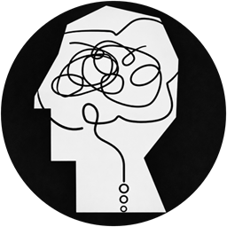

no session open unsavedclaude in a real terminal — the one above, or any window you
already have open. Its session appears here. Attach to read and edit its
context while it runs.
/rewind) or here — that message is removed,
and your edit with it.
brainstorm.exe again.